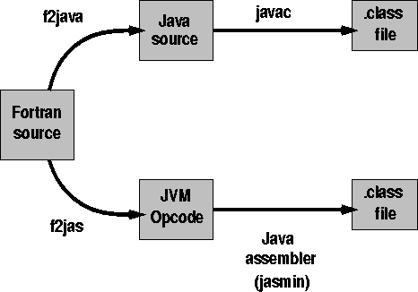

Several freely available Fortran compiler fronts ends, such as g77 and f2c, were examined to base the f2j on. None of these fit the needs of the project sufficiently well, and the following quotation helped provide motivation to start a clean implementation from scratch:
The program f2c is a horror, based on ancient code and hacked unmercifully. Users are only supposed to look at its C output, not at its appalling inner workings. --Stuart Feldman [20]
Due to the context sensitive nature of the Fortran language, the lexer was hand written (in C), as recommended in [23, 24]:
It should be noted that tokenizing Fortran is such an irregular task that it is frequently easier to write an ad hoc lexical analyzer for Fortran in a conventional programming language than it is to use an automatic lexical analyzer generator. --Alfred Aho, 1988 [23]
This allowed expression of the Fortran grammar as LR(1), sufficient to use the parser generator Bison, a yacc work-alike distributed by the Free Software Foundation. Bison generates a an ANSI C parser, which is useful for platform indendence. There is no type checking if Java source code is chosen to be emitted. The Fortran source file is assumed to be standard Fortran 77. Limited type checking is done during the type conversion pass when assembler opcode is emitted. All code generation and type conversion procedures are written in C, portability and extensibility.
The Fortran source code is parsed
into an abstract syntax tree (AST) consisting of tagged union
nodes implementing the equivalent Java structures.
Using an abstract syntax tree has
several benefits, one of which is that code
restructuring can be easily performed. For instance,
continuing loop iteration within a Fortran do loop requires
a goto/continue pair, in Java this is accomplished similar
to C, with a continue statement. Similarly,
breaking a loop in Fortran 77 requires a goto/label
pair, implemented as a break statement in Java.
The AST allows easy lookup
and connection between non-adjacent nodes for such
code restructuring. Another benefit is that the AST
may be passed by its root node to separate type-checking,
code optimizing and code generation procedures.

Figure 2: Translation strategies in the f2j project
After parsing a Fortran source file, the AST is traversed recursively to emit either Java source code for compilation or Java opcode suitable for assembly into class file format. Targeting Java source and opcode is more convenient than producing bytecode directly because: (i) internal documentation of BLAS and LAPACK subroutines exists in the form of comment headers and can be preserved exactly in the translated form, and (ii) Java source and opcode are stored in readable ASCII text files, much more convenient for testing and debugging the translated routines. Targeting Java source is fairly straightforward, but due to many control structures in the BLAS and LAPACK reference source being written with goto constructions, the amount of Java source code presently emitted is limited. Since code restructuring has been shelved for later consideration, the remaining subroutines are emitted as opcode suitable for assembly using a public domain assembler, jasmin (Java Assembler Interface) [25]. JVM opcode has not yet been standardized by Sun, but jasmin uses instructions identical to those specified by Sun in their JVM documentation [26]. The same opcode is produced as output from Sun's javap program invoked to disassemble a Java class file. Figure 2 shows a diagram of the two translation schemes that are being experimented with in the f2j project.
One of the more challenging aspects of the project is resolving differences between the calling structures in Fortran and Java. Fortran passes all arguments by reference. Java passes objects by reference, but primitives such as integers, floats and doubles are passed by value. A Fortran subroutine that modifies an integer for use in the calling program has no direct counterpart in Java. One possibility would be to create a class containing all of the arguments for a subroutine. While this technique would be more object oriented than changing lists of calling parameters, the complexity of writing a translator could be greatly increased.
Java provides class wrappers for all primitive types, but value of the primitive is immutable within the object wrapper. Since the JVM requires that all methods return a value or void, values cannot be left on the JVM stack (each method implements its own stack). The solution being implemented is to simply wrap the necessary values (e.g., the INFO variable used in many LAPACK routines for reporting error status) in a custom class consisting of a single static class variable. This also provides less overhead than instantiating built-in wrappers provided in the Java language specification. A simple experiment showed that instantiating an object of type Double requires 280 bytes in Java (javac version 1.1.1), but a simple wrapper such as
class DoubleWrapper {
double d;
}
only requires 56 bytes. Both classes, Double and DoubleWrapper, inherit from class Object. The size difference reflects methods implemented in Double that are lacking in DoubleWrapper. Another possibility under consideration is to pass primitives as single element arrays.
Neither is it possible to pass references to subsections of arrays. Java will dereference indexed arrays and pass the value instead. This necessitates changing the calling parameters of the BLAS and LAPACK routines to pass indices separately with every array. Method overloading would allow a default method invocation identical to a LAPACK call that passed all arrays by their initial reference, but overloading for all possible cases would increase the number of required methods by , n the number of arrays.